Market Complexity
Housing prices react to several interacting macroeconomic and financial variables.
IT Business School · Tunisia
Data Mining & Machine Learning · 2025-2026
Supervisor: Kaouether Ben Ali
Using Data Mining, Machine Learning, OLAP, diagnostics, and Streamlit dashboard evidence.
Ayoub Naouech · Rayen Belhadj
Housing prices react to several interacting macroeconomic and financial variables.
Analysts, students, institutions, and policymakers need accessible evidence.
Machine learning and diagnostics help test predictive value and model risk.
Study historical Home Price Index movement and macroeconomic context.
Train and compare models using a chronological evaluation split.
Use correlations, diagnostics, OLAP, and paper review for interpretation.
Build a Streamlit intelligence app with visual pages and exports.
Add production-readiness, model-card, and registry-style modules.
Create report, poster, and presentation-ready graphics.
Convert date column and sort observations chronologically.
Ensure modeling columns are usable numeric variables.
Check missing values, duplicates, and row preservation.
Create Pre-Trump, Trump, and Biden administration groups.
Add HPI_lag1, HPI_lag3, rolling features, and percentage changes.
Build affordability and macro-pressure ratios for interpretation.
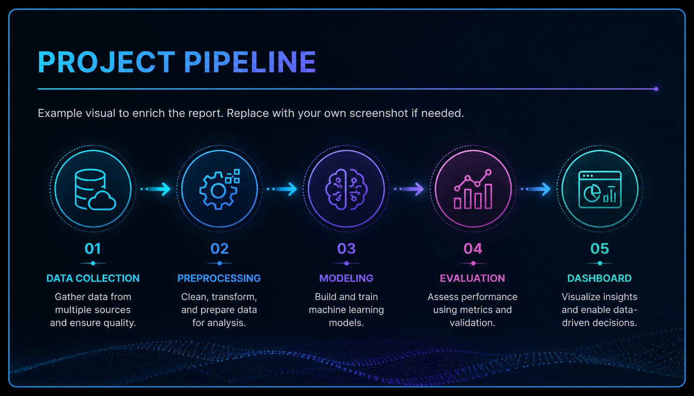
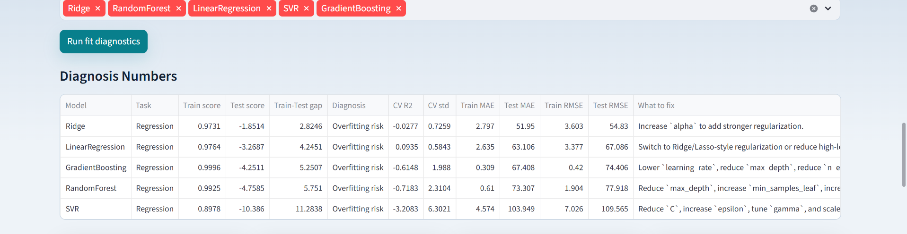
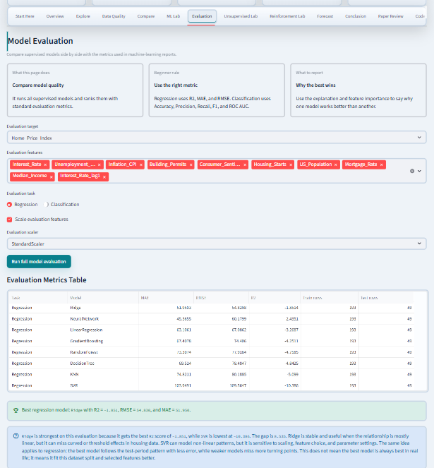
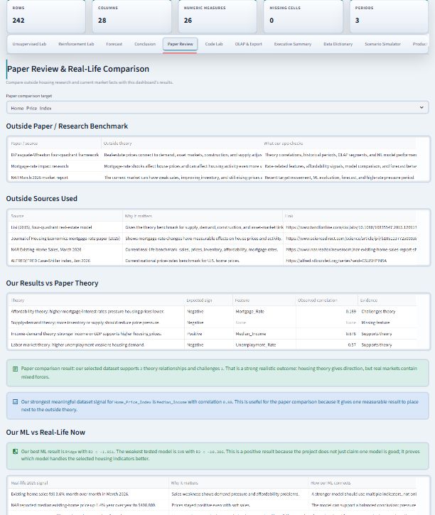
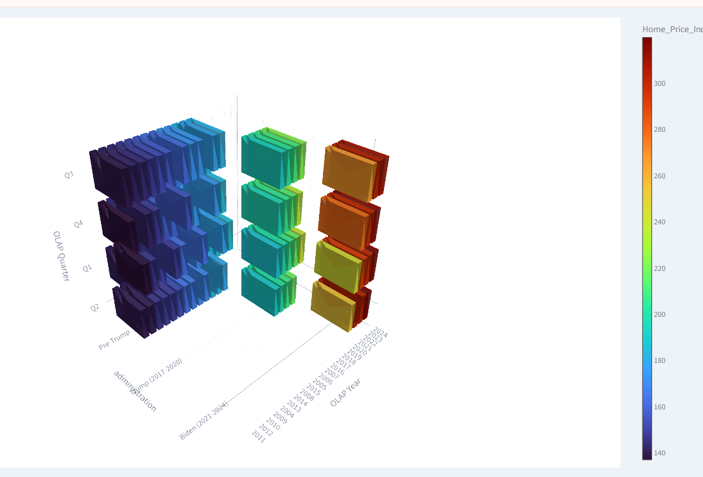
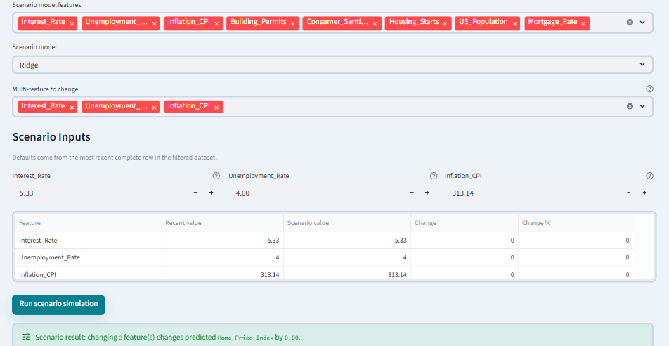
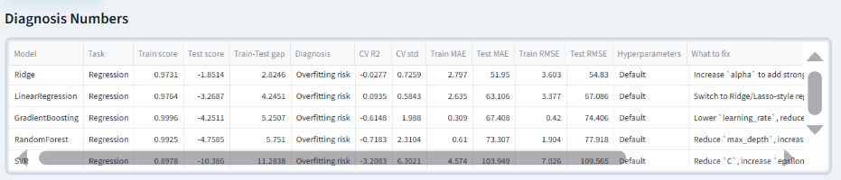
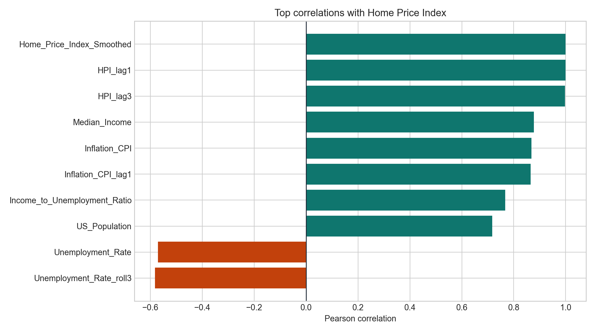
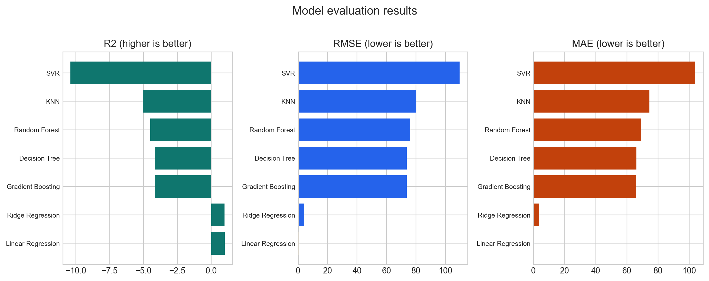
Explained variance on the chronological test set.
Average absolute prediction error.
Large-error-sensitive error metric.
R² 0.999 · MAE 0.661 · RMSE 0.797 · CV R² 0.994
R² 0.984 · MAE 3.715 · RMSE 4.162
R² -4.148 · MAE 65.816 · RMSE 73.669
R² -4.159 · MAE 66.218 · RMSE 73.750
R² -4.494 · MAE 69.077 · RMSE 76.105
Tree models struggled to extrapolate the final high-price test period.
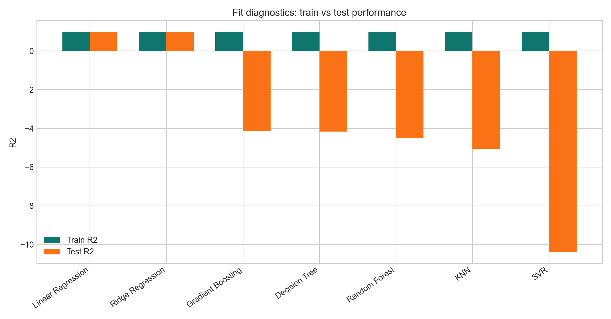
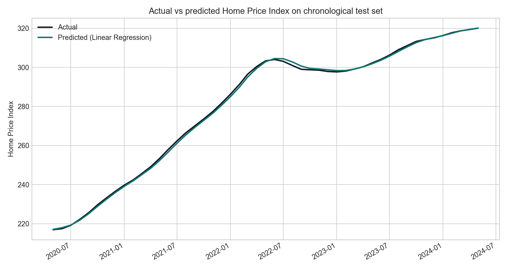
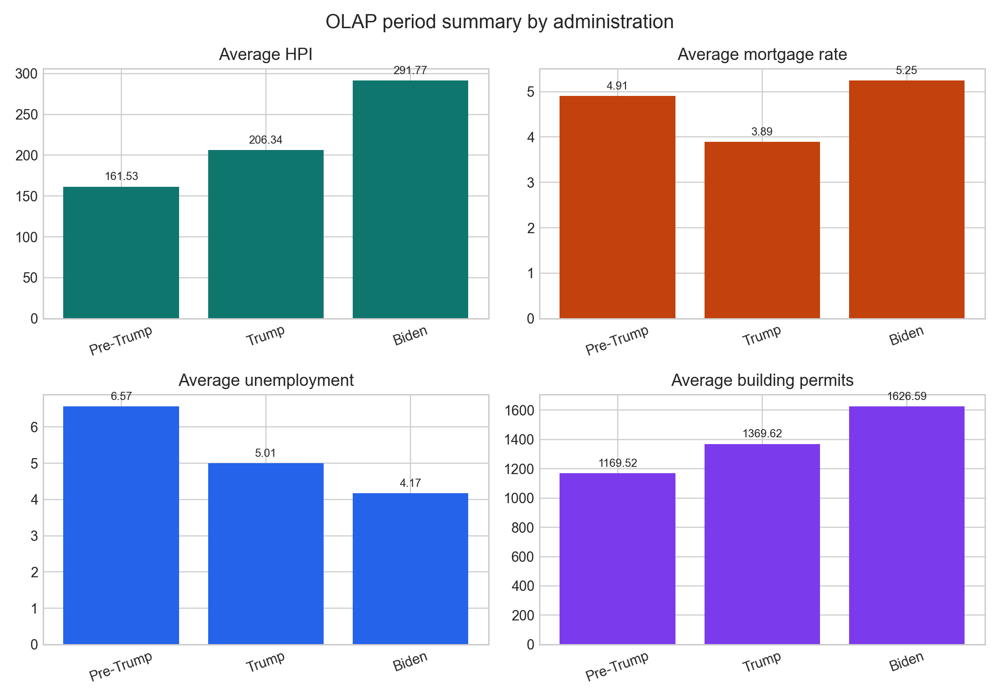
Lagged and smoothed HPI strongly support market persistence.
Median income remains an important context variable with r = 0.88.
Mortgage-rate pressure is mixed because price response can lag.
Prices can remain elevated when supply and market inertia matter.
The strongest conclusion is multi-factor interpretation.
The app combines theory, models, OLAP, diagnostics, and reporting.
Understand which indicators move with housing prices.
Learn EDA, ML, diagnostics, OLAP, and dashboard deployment.
Use model comparison and period summaries for risk discussion.
Compare scenarios, periods, model behavior, and market context.
Use screenshots and generated figures in reports and defense slides.
Production readiness and model-card ideas improve project maturity.